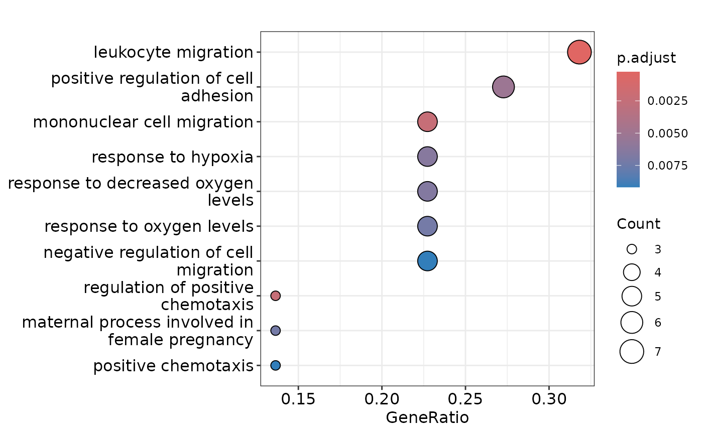
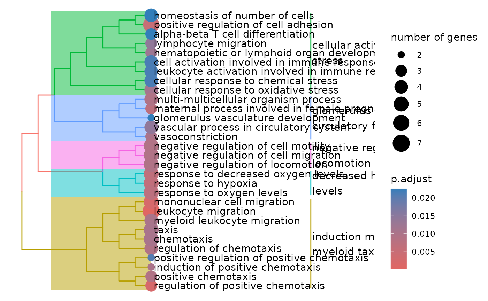
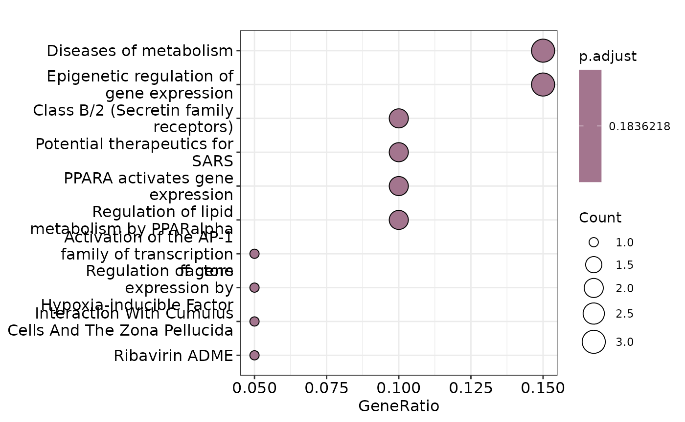
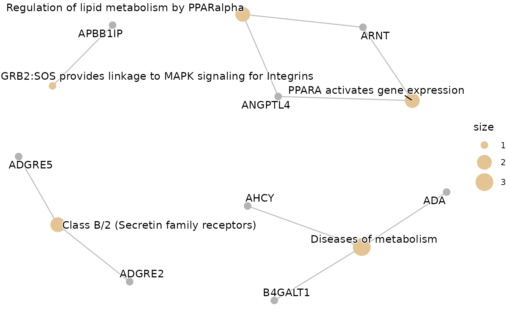
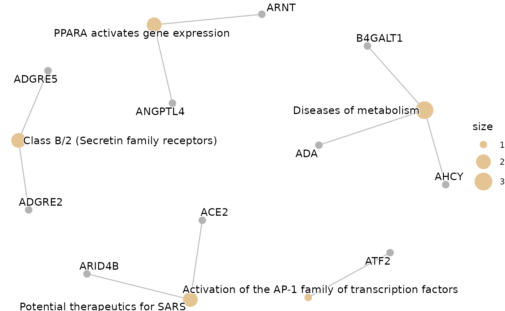
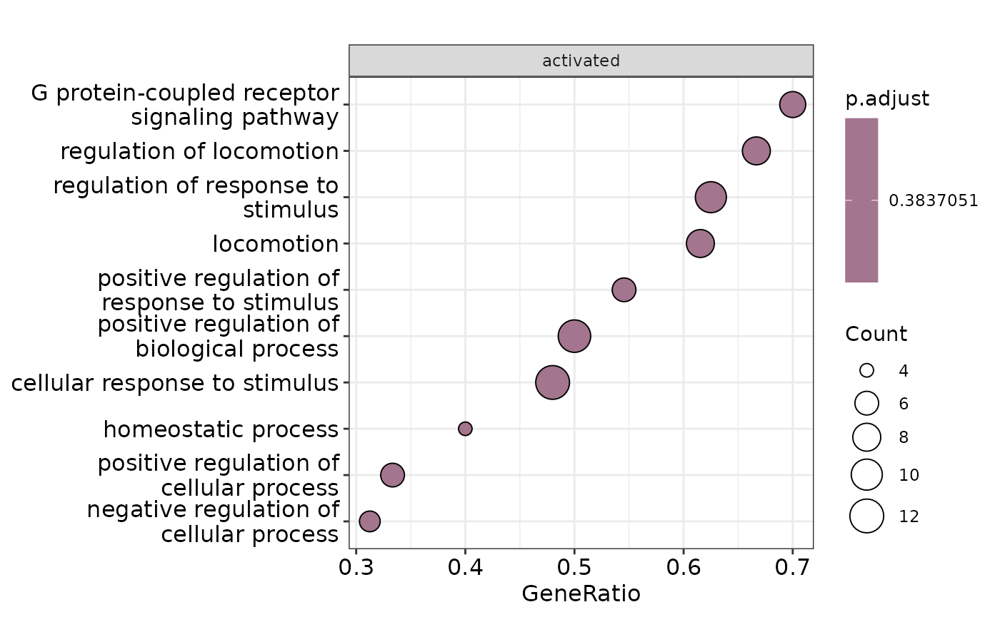
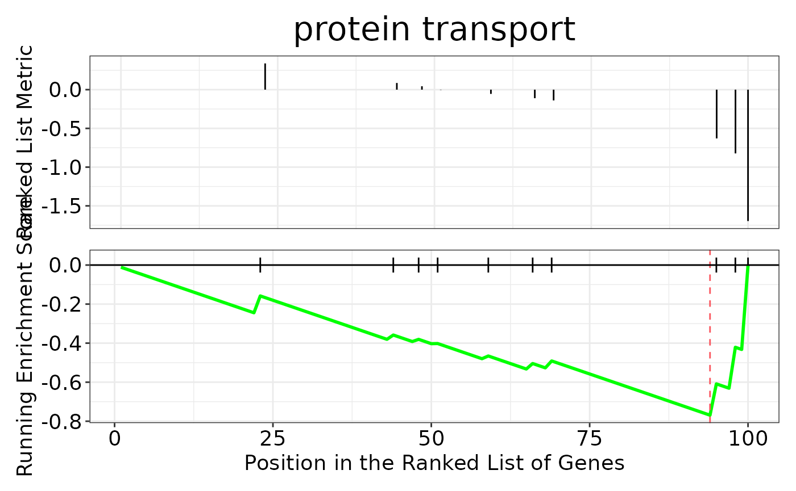
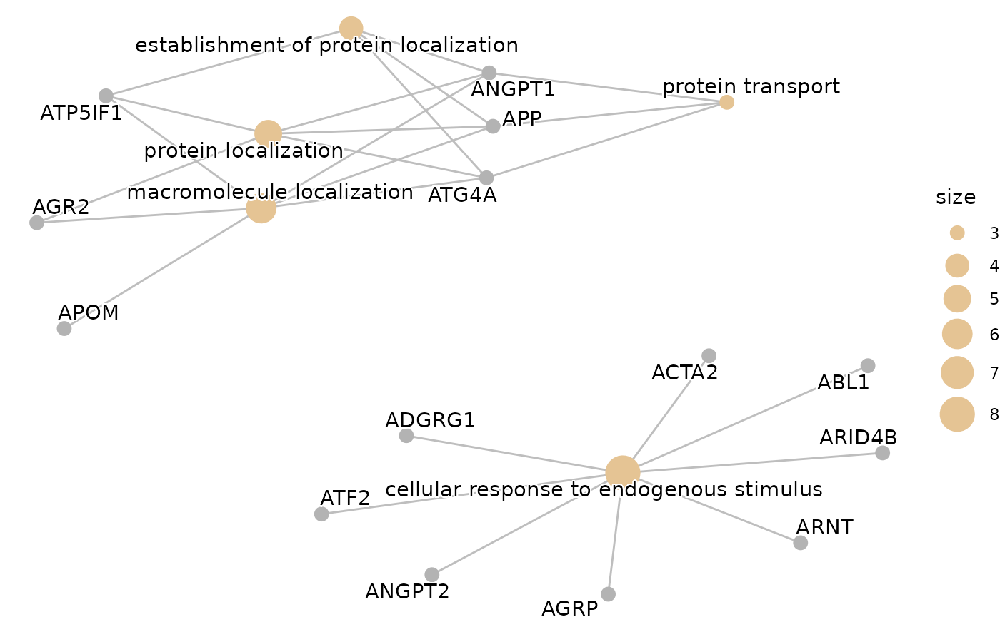
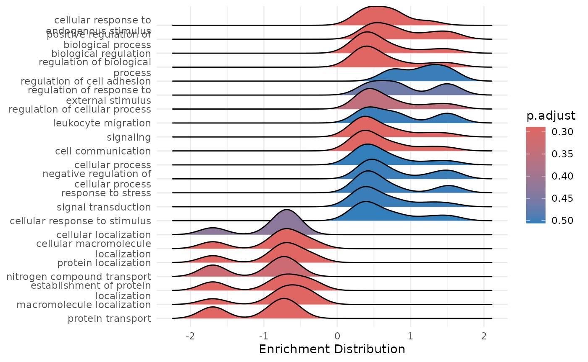

Post Analysis: Pathway Enrichment & Automated Literature Search
Source:vignettes/post_analysis.Rmd
post_analysis.RmdThis vignette will guide you through the post analysis of the results
obtained from the HDAnalyzeR pipeline. The post analysis consists of two
possible steps: pathway enrichment analysis and automated literature
search. The pathway enrichment analysis is performed using the Gene
Ontology, KEGG and Reactome databases from clusterProfiler
and ReactomePA packages respectively. The automated
literature search is performed using the the PubMed database.
Loading the Data
We will load HDAnalyzeR and dplyr, load the example data and metadata that come with the package and initialize the HDAnalyzeR object.
library(HDAnalyzeR)
library(dplyr)
#> Error in get(paste0(generic, ".", class), envir = get_method_env()) :
#> object 'type_sum.accel' not found
hd_obj <- hd_initialize(dat = example_data,
metadata = example_metadata,
is_wide = FALSE,
sample_id = "DAid",
var_name = "Assay",
value_name = "NPX")For the Over Representation Analysis we are going to use a list of differentially expressed proteins. In this example we are going to use the up-regulated proteins. We could also use the features list from the classification models or even run both and get the intersect as it is done in the Get Started guide.
de_res <- hd_de_limma(hd_obj, case = "AML")Over Representation Analysis
First, we will perform an Over Representation Analysis (ORA) using
the Gene Ontology database and the BP ontology. We will use the
hd_ora() and hd_plot_ora() functions to run
the analysis and plot the results respectively.
proteins <- de_res$de_res |> filter(logFC > 0 & adj.P.Val < 0.05) |> pull(Feature)
enrichment <- hd_ora(proteins, database = "GO", ontology = "BP")
enrichment_plots <- hd_plot_ora(enrichment)
enrichment_plots$dotplot
enrichment_plots$treeplot
enrichment_plots$cnetplot
Let’s change the database and the p-value threshold.
enrichment <- hd_ora(proteins, database = "Reactome", pval_lim_enrichment = 0.2)
enrichment_plots <- hd_plot_ora(enrichment)
enrichment_plots$dotplot
enrichment_plots$treeplot
enrichment_plots$cnetplot
Gene Set Enrichment Analysis
We can also run a Gene Set Enrichment Analysis (GSEA) using the
hd_gsea() and hd_plot_gsea functions. In
hd_gsea() we can select if we want to include only up, down
or both up and down regulated proteins, as well as the adjusted P value
and logFC limits to consider a protein as differentially expressed. The
hd_plot_gsea() function will plot the results.
⚠️ In this case, the function requires strictly differential expression results.
enrichment <- hd_gsea(de_res, database = "GO", ontology = "BP", pval_lim_enrichment = 0.5)
enrichment_plots <- hd_plot_gsea(enrichment)
enrichment_plots$dotplot
enrichment_plots$gseaplot
enrichment_plots$cnetplot
enrichment_plots$ridgeplot
Searching PubMed for our Biomarkers
Finally, let’s perform an automated literature search using the
hd_literature_search(). The function requires a list with
disease names as names and genes/proteins as values. We will create the
list, run the search and preview the results.
biomarkers <- list("acute myeloid leukemia" = c("FLT3", "EPO"),
"chronic lymphocytic leukemia" = c("PARP1", "FCER2"))
lit_res <- hd_literature_search(biomarkers, max_articles = 5)
#> Searching for articles on FLT3 and acute myeloid leukemia
#> Searching for articles on EPO and acute myeloid leukemia
#> Searching for articles on PARP1 and chronic lymphocytic leukemia
#> Searching for articles on FCER2 and chronic lymphocytic leukemia
lit_res$`acute myeloid leukemia`$FLT3$title
#> [1] "Targeting FMS-like tyrosine kinase 3 (FLT3) in acute myeloid leukemia: Novel molecular approaches and therapeutic challenges."
#> [2] "Case report: Identification of a novel <i>TOR1AIP2::ETV6</i> transcript with <i>FLT3</i>-ITD mutation in acute myeloid leukemia progressed from myelodysplastic syndrome."
#> [3] "Strategies for the treatment of acute myeloid leukemia with FLT3 mutations: a patent review."
#> [4] "Discovery of 3-amide-pyrimidine-based derivatives as potential fms-like tyrosine receptor kinase 3 (FLT3) inhibitors for treating acute myelogenous leukemia."
#> [5] "Discovery of pyridine-based derivatives as FLT3 inhibitors for the treatment of acute myeloid leukemia."📓 Remember that these data are a dummy-dataset with artificial data and the results in this guide should not be interpreted as real results. The purpose of this vignette is to show you how to use the package and its functions.